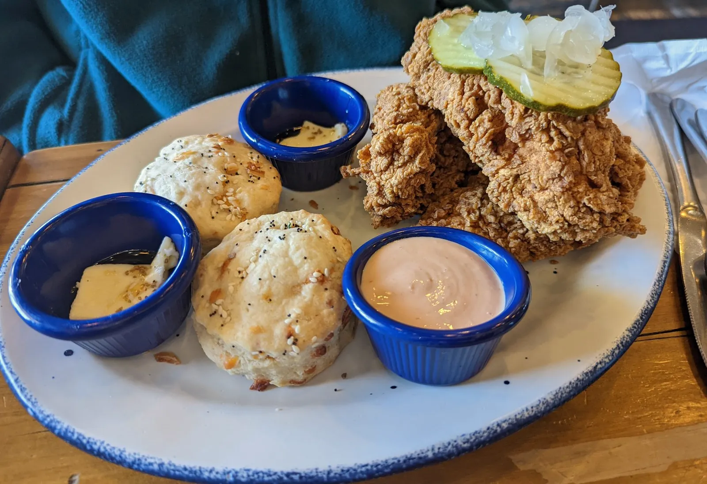

Mama Bird Southern Kitchen
Southern kitchen & smokehouse
10550 Southern Highlands Pkwy #140, Las Vegas, NV 89141
Rating: 5/5
Very good. Unique.
Mac N' Cheese Chicken Tender Waffle Sandwich (a fried chicken waffle taco topped with mac and cheese) · Fried chicken tenders with biscuits
About the place
Southern-style kitchen and smokehouse in the Southern Highlands area of southwest Las Vegas, serving breakfast, lunch and supper. The menu runs from fried chicken, chicken and waffles and everything biscuits to slow-smoked brisket and baby back ribs, with sides like mac and cheese, grits and collard greens. Open daily 8 a.m. to 9 p.m., with breakfast served until 3 p.m. Prices are moderate ($$), and there's a happy hour in the afternoon.
What other diners say: Reviewers often praise the fried chicken, smoked brisket, creamy grits, rich mac and cheese and the biscuits, along with generous portions and friendly service. A few feel some items are pricey for what you get or have had an off visit, like overcooked wings.
Sources: Mama Bird's website and menu, Yelp, DoorDash and Seamless. Summaries are paraphrased, not quotes.




Comments
Sign in with GitHub to leave a comment or reaction.